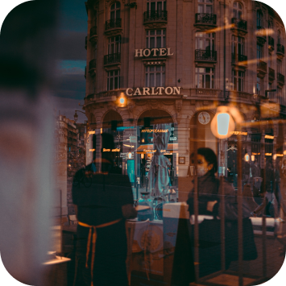

FOODIE VILLES


Lille
Le comptoir des saveurs
Notre ambiance chaleureuse et notre service attentif vous promettent un moment inoubliable.

Arras
Le Jardin Gourmand
Élégant et contemporain, notre restaurant offre une expérience culinaire raffinée avec des plats créatifs et savoureux.

Lens
La Table Enchantée
Bienvenue dans notre havre gourmand où chaque bouchée est une véritable expérience gustative.

Béthune
L'Antre des Délices
Découvrez une fusion de saveurs uniques dans un cadre convivial et laissez-vous séduire par notre passion pour la gastronomie.
Valenciennes
Saveurs Urbaines
Innovant et contemporain, notre restaurant propose une expérience culinaire unique mêlant saveurs audacieuses et présentations artistiques.